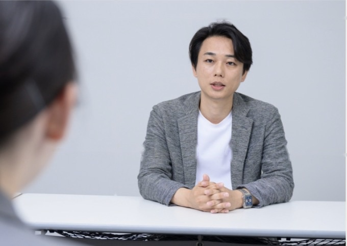

幼少期から時計の仕組みに興味を持ち、分解・修理。6歳から続けた日本武道と書道を通じ、丁寧に積み上げる姿勢を培う。
SIerで14年、ITコンサルティングで10年。金融・カード領域を中心に、開発現場からPMO、PM、プロジェクトリーダーまで幅広く経験。ITコンサルティング会社ではシニアマネージャーを務める。
2027年の独立を目指し、現在は会社員として、複数ベンダー・関係者の多いプロジェクトに入り込む。状況を整理し、ボトルネックを見極め、関係者をつなぎ、合意形成から実行まで推進する。プロジェクトマネジメントとAIを掛け合わせ、AI時代の新しいプロジェクトマネジメントを研究している。
何が起きているのか。
本当のボトルネックは何か。
現場の言葉を、経営の言葉へ。
顧客の要望を、システム要件へ。
複雑な問題を、関係者が動ける言葉へ。
整理して終わらない。
合意して終わらない。
決めて、動かして、前へ進める。